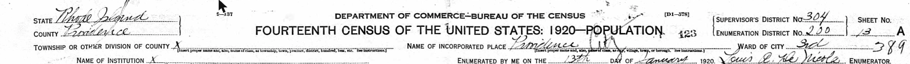
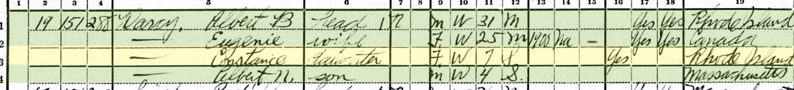
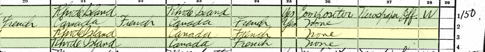
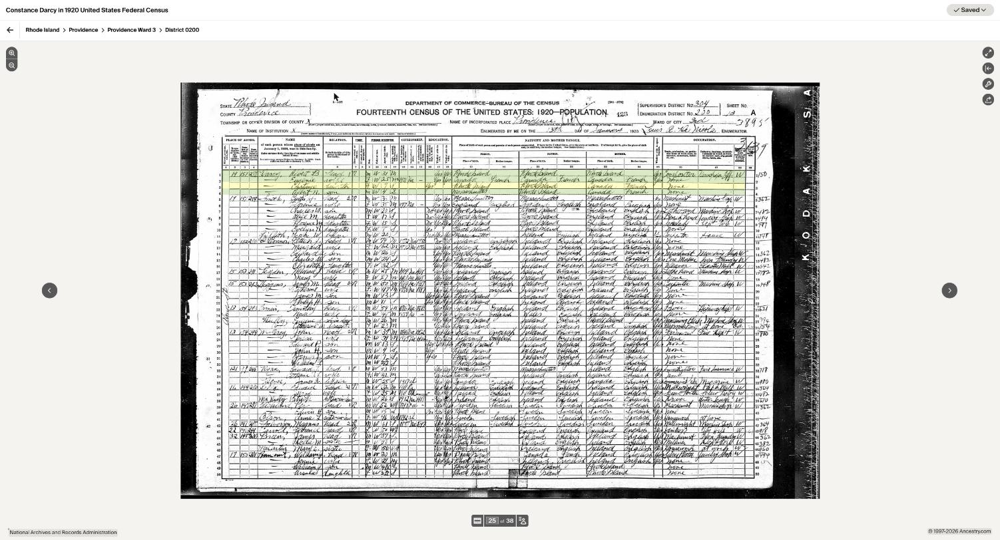

1920 U.S. census: the Darcy family, 19 Alma Street, Providence
1920 United States Federal Census




The original record, as it appears in the register or index.
What this document is
The United States census. A census taker went door to door and wrote down every person in each household, with age, birthplace and work.
What it says
Enumerated 13 January 1920. Albert B. Darcy, head, rents, male, white, 31, married, reads and writes, born Rhode Island, parents born Rhode Island, compositor in a newspaper office, wage worker. Eugenie, wife, 25, married, came 1900(?), naturalized, reads and writes, born Canada, mother tongue French, parents born Canada (French), no occupation. Constance, daughter, 7, single, attended school, born Rhode Island; father born Rhode Island, mother born Canada (French). Albert N., son, 4, born Massachusetts.
Place
19 Alma Street, Ward 3, Providence, Rhode Island (supervisor district 304, ED 200, sheet 13A, dwelling 151, family 288). Indexed by Ancestry as "Alms St"; the 1919, 1922 and 1923 directories print 19 Alma.
How it was read
Read from the census image. House number and Eugenie’s arrival year read with some uncertainty; the street name is in the margin outside the crop.